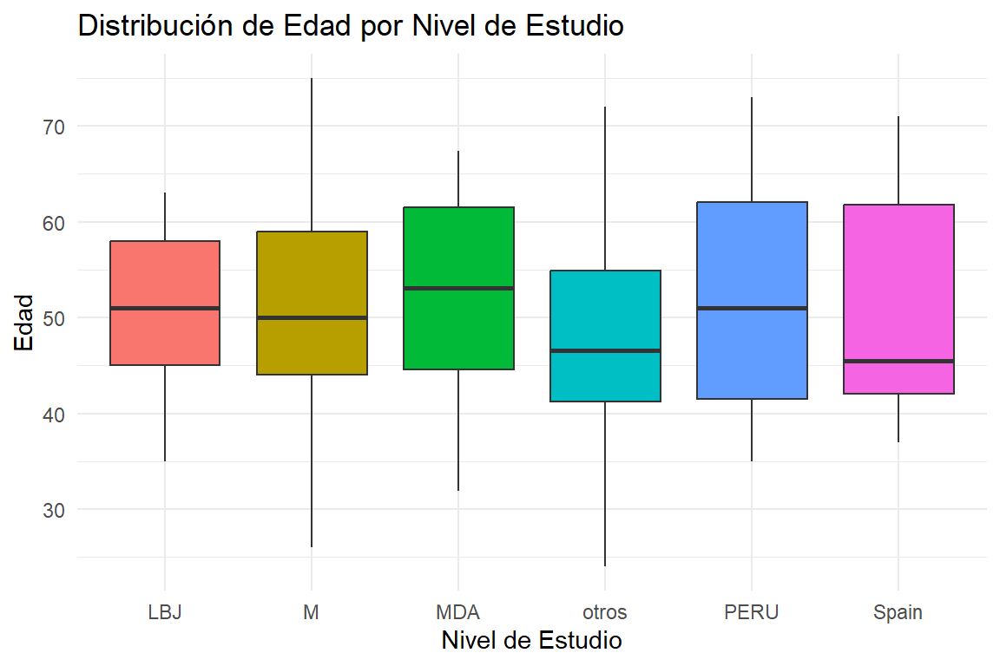

Esta sección pretende abordar la etapa más crucial de todo el proceso de Machine Learning (ML), el curado de los datos, también conocido como pre-procesamiento. Este paso no es simplemente un prefacio al modelo predictivo, sino una fase determinante en la construcción de un modelo de aprendizaje automático robusto y eficaz.
El preprocesamiento de datos es esencial para transformar el aprendizaje automático en un proceso analítico y estructurado. Más allá de la mera alimentación de un algoritmo con data crudos, esta fase crítica abarca la limpieza, normalización, transformación y extracción de características necesarias. Estas acciones previas al aprendizaje modelan los datos para minimizar distorsiones y anomalías, preservando la integridad del proceso de aprendizaje y fortaleciendo la precisión de los modelos predictivos resultantes, demostrando que la eficacia del modelo está intrínsecamente ligada a la calidad del preprocesamiento aplicado al conjunto de data original (Obaid, Dheyab, y Sabry 2019).
1.2 Análisis Exploratorio
El fichero de data crudos, facilitado por el Dr. José Manuel Jerez Aragonés, se trata de un fichero .csv con una serie de variables detalladas en la Figura 1.
Figura 1: Descripción de las variables.
Generalmente, se descartarían las variables que no guardan una obvia relevancia clínica con respecto a la variable objetivo (PCR), en este caso, la variable Muestra. Antes de eliminar esta variable, se puede observar que hay diferentes caracteres comunes a las muestras de varios pacientes, estos caracteres representan el estudio al que pertenece el dato, y esto sí que puede tener importancia clínica, ya que podría ayudarnos a comprender si los pacientes de un estudio determinado guardan algún tipo de relación estadística, introduciendo así un posible sesgo en los data cuya fuerza dependerá de la cantidad de pacientes de ese estudio concreto. Es por esto que se va a crear la variable Estudio.
Finalmente, se guardarán en un vector las variables cateóricas, y en otro, las numéricas. Este bloque se código se repetirá varias veces durante la limpieza de data, ya que la naturaleza de algunas variables puede cambiar.
Se puede apreciar una pequeña cantidad de valores indefinidos (I). Estos serán imputados con la moda. Adicionalmente, podemos observar que las clases principales de esta variable están muy desbalanceadas, por lo que en un futuro tal vez se debe tomar una decisión sobre si estos data pueden llegar a aportar algo a las conclusiones del proyecto.
La cantidad de muestras en T0 es demasiado baja, debido a esto, para que tengan algo de significancia, se combinarán con las de T1 para crear la nueva clase, T0-T1.
Expand Code
# | echo: false# | message: false# | warning: false# | error: falsedata <- data %>%mutate(`Estadio`=recode(`Estadio`,`T0`="T1"))data <- data %>%mutate(`Estadio`=recode(`Estadio`,`T1`="T0-T1"))
Podemos observar que el criterio de clasificación ha marcado el tipo de estudio en otros para la mayoría de muestras. Se tendrá en cuenta este dato para futuros análisis.
Adicionalmente, se codificará la variable Grado como categórica con la finalidad de no dar más importancia a valores de grado más alto.
El conjunto de datos solo contiene dos variables numéricas, Edad y PCR. Para poder realmente sacar una conclusión de este apartado, he considerado que podría ser interesante comprobar si la distirbución de estas variables se mantiene similar independientemente del estudio llevado a cabo. Esto podría a comprender
# | label: fig-dist-estudio-edad# | fig.cap: "Distribución de la variable 'Edad' con respecto a 'Estudio'"# | out.width: '80%'# | fig.align: 'center'ggplot(data, aes(x = Estudio, y = Edad, fill = Estudio)) +geom_boxplot() +labs(title ="Distribución de Edad por Nivel de Estudio",x ="Nivel de Estudio",y ="Edad") +theme_minimal() +theme(legend.position ="none")

En el gráfico de barras generado en la parte superior podemos observar que la distribución de la variable edad se mantiene a lo largo de los estudios. No hay ningún estudio incluído en el conjunto de datos que presente un sesgo desmedido en esta variable. Se pueden observar aún así una cantidad razonable de valores atípicos en los grupos M y otros, sin embargo, podemos atribuir esto a que son los dos conjuntos más grandes, así que es más probable que haya algún error humano en estos; no se prestará atención ya que esos valores atípicos no parecen estar fuera de lo clínicamente razonable en el contexto de este estudio (edades por debajo de 100 o por encima de 10).
Expand Code
# | label: fig-dist-estudio-edad# | fig.cap: "Distribución de la variable 'Edad' con respecto a 'Estudio'"# | out.width: '80%'# | fig.align: 'center'# | warning: false# | message: false# | echo: falsedf_summary <- data %>%filter(!is.na(PCR)) %>%group_by(Estudio) %>%summarise(Proporcion =mean(PCR ==1, na.rm =TRUE)) ggplot(df_summary, aes(x = Estudio, y = Proporcion, fill = Estudio)) +geom_bar(stat ="identity") +labs(title ="Proporción de valores positivos de PCR por Nivel de Estudio",x ="Nivel de Estudio",y ="Proporción de PCR positivos") +theme_minimal() +theme(legend.position ="none", axis.text.x =element_text(angle =45, hjust =1))
Podemos observar que el 50% de valores positivos de PCR se encuentran en los gripos LBJ y otros. Los 3 grupos restantes se dividen el resto de muestras positivas casi equitativamente, con una clara carencia de valores positivos en el grupo Spain.
2 Referencias
Obaid, Hadeel S., Saad Ahmed Dheyab, y Sana Sabah Sabry. 2019. «The Impact of Data Pre-Processing Techniques and Dimensionality Reduction on the Accuracy of Machine Learning», 279-83. https://doi.org/10.1109/IEMECONX.2019.8877011.
Ejecutar el código
---title: "Modelado Predictivo: Cáncer de Mama"author: "Mario Pascual González"date: "`r Sys.Date()`"format: html: theme: darkly # Cambiado a un tema oscuro highlight-style: monokai # Monokai también funciona bien en temas oscuros toc: true toc-depth: 3 toc-title: "Contenidos" toc-float: collapsed: false smooth-scroll: true toc_scroll: true number-sections: true code-fold: true code-tools: true code-summary: "Expand Code" code-line-numbers: false fig-width: 6 fig-height: 4 fig-align: center html-math-method: katex bibliography: references.bib lang: es other-links: - text: LinkedIn icon: linkedin href: https://www.linkedin.com/in/mario-pascual-gonzalez/ - text: Correo Electrónico icon: envelope href: "mailto:mario.pg02@gmail.com?subject=Contacto desde el informe de Modelado Predictivo" - text: Perfil de Github icon: github href: https://github.com/MarioPasc code-links: - text: Repositorio del Informe icon: file-code href: https://github.com/MarioPasc/Modelado-Predictivo-Cancer-de-Mama-R---```{r setup}#| output: false#| echo: false#| warning: false#| library(readxl)library(readr)library(ggplot2)library(dplyr)library(broom)library(DT)library(tidyverse)library(reshape2)library(MASS)data <- read.csv(file = "data_p1.csv", sep = ";", dec=",")```# Pre-procesamiento de los data## JustificaciónEsta sección pretende abordar la etapa más crucial de todo el proceso de *Machine Learning* (ML), el curado de los datos, también conocido como pre-procesamiento. Este paso no es simplemente un prefacio al modelo predictivo, sino una fase determinante en la construcción de un modelo de aprendizaje automático robusto y eficaz. El preprocesamiento de datos es esencial para transformar el aprendizaje automático en un proceso analítico y estructurado. Más allá de la mera alimentación de un algoritmo con data crudos, esta fase crítica abarca la limpieza, normalización, transformación y extracción de características necesarias. Estas acciones previas al aprendizaje modelan los datos para minimizar distorsiones y anomalías, preservando la integridad del proceso de aprendizaje y fortaleciendo la precisión de los modelos predictivos resultantes, demostrando que la eficacia del modelo está intrínsecamente ligada a la calidad del preprocesamiento aplicado al conjunto de data original [@8877011]. ## Análisis ExploratorioEl fichero de data crudos, facilitado por el Dr. José Manuel Jerez Aragonés, se trata de un fichero `.csv` con una serie de variables detalladas en la @fig-desccol.{#fig-desccol fig-align="center"}Generalmente, se descartarían las variables que no guardan una obvia relevancia clínica con respecto a la variable objetivo (**PCR**), en este caso, la variable **Muestra**. Antes de eliminar esta variable, se puede observar que hay diferentes caracteres comunes a las muestras de varios pacientes, estos caracteres representan el estudio al que pertenece el dato, y esto sí que puede tener importancia clínica, ya que podría ayudarnos a comprender si los pacientes de un estudio determinado guardan algún tipo de relación estadística, introduciendo así un posible sesgo en los data cuya fuerza dependerá de la cantidad de pacientes de ese estudio concreto. Es por esto que se va a crear la variable **Estudio**.```{r}#| warning: false#| label: Variable Estudiodata$Estudio <-ifelse(grepl("^PERU", data$Muestra), "PERU",ifelse(grepl("^MDA", data$Muestra), "MDA",ifelse(grepl("^LBJ", data$Muestra), "LBJ",ifelse(grepl("^Spain", data$Muestra), "Spain",ifelse(grepl("^M", data$Muestra), "M", "otros")))))data$Muestra <-NULL```Finalmente, se guardarán en un vector las variables cateóricas, y en otro, las numéricas. Este bloque se código se repetirá varias veces durante la limpieza de data, ya que la naturaleza de algunas variables puede cambiar. ```{r}#| warning: false#| label: categoricas y numericasnumericas <-colnames(data)[sapply(data, is.numeric)]categoricas <-colnames(data)[!colnames(data) %in% numericas]```### Exploración de variables categóricas```{r}obtener_estadisticas_categoricas <-function(data, variable) {# Calcular frecuencias frecuencias <-table(data[[variable]])# Calcular porcentajes porcentajes <-prop.table(frecuencias) *100# Crear un data.frame con los resultados estadisticas_df <-data.frame(Categoria =names(frecuencias),Frecuencia =as.integer(frecuencias),Porcentaje =round(porcentajes, 2) )return(estadisticas_df)}graficar_barras_categoricas <-function(estadisticas_df, variable) {# Generar gráfico de barras usando ggplot2 p <-ggplot(estadisticas_df, aes(x = Categoria, y = Frecuencia, fill = Categoria)) +geom_bar(stat ="identity") +theme_minimal() +labs(title =paste("Distribución de la variable", variable),x = variable,y ="Frecuencia") +theme(axis.text.x =element_text(angle =45, hjust =1))return(p)}# Aplicar la función a cada variable categórica y almacenar los resultadosresultados <-lapply(categoricas, function(var) obtener_estadisticas_categoricas(data, var))```::: {.panel-tabset}## REst```{r}# | echo: false# | message: false# | warning: false# | error: falsegraficar_barras_categoricas(resultados[[1]], categoricas[1])```Se puede apreciar una pequeña cantidad de valores indefinidos (*I*). Estos serán imputados con la moda. ```{r}# | echo: false# | message: false# | warning: false# | error: falsedata <- data %>%mutate(`REst`=recode(`REst`,`I`=NA_character_))```## RPro```{r}# | echo: false# | message: false# | warning: false# | error: falsegraficar_barras_categoricas(resultados[[2]], categoricas[2])```Se puede apreciar una pequeña cantidad de valores indefinidos (*I*). Estos serán imputados con la moda. ```{r}# | echo: false# | message: false# | warning: false# | error: falsedata <- data %>%mutate(`RPro`=recode(`RPro`,`I`=NA_character_))```## Her2```{r}# | echo: false# | message: false# | warning: false# | error: falsegraficar_barras_categoricas(resultados[[3]], categoricas[3])```Se puede apreciar una pequeña cantidad de valores indefinidos (*I*). Estos serán imputados con la moda. Adicionalmente, podemos observar que las clases principales de esta variable están muy desbalanceadas, por lo que en un futuro tal vez se debe tomar una decisión sobre si estos data pueden llegar a aportar algo a las conclusiones del proyecto. ```{r}# | echo: false# | message: false# | warning: false# | error: falsedata <- data %>%mutate(`Her2`=recode(`Her2`,`I`=NA_character_))```## Estadio```{r}# | echo: false# | message: false# | warning: false# | error: falsegraficar_barras_categoricas(resultados[[4]], categoricas[4])```La cantidad de muestras en *T0* es demasiado baja, debido a esto, para que tengan algo de significancia, se combinarán con las de *T1* para crear la nueva clase, *T0-T1*. ```{r}# | echo: false# | message: false# | warning: false# | error: falsedata <- data %>%mutate(`Estadio`=recode(`Estadio`,`T0`="T1"))data <- data %>%mutate(`Estadio`=recode(`Estadio`,`T1`="T0-T1"))```## NodAfec```{r}# | echo: false# | message: false# | warning: false# | error: falsegraficar_barras_categoricas(resultados[[5]], categoricas[5])```Los data de la variable *NodAfec* parecen estar en orden. ## Fenotipo```{r}# | echo: false# | message: false# | warning: false# | error: falsegraficar_barras_categoricas(resultados[[6]], categoricas[6])```Los data de la variable *Fenotipo* parecen estar en orden. ## Estudio```{r}# | echo: false# | message: false# | warning: false# | error: falsegraficar_barras_categoricas(resultados[[7]], categoricas[7])```Podemos observar que el criterio de clasificación ha marcado el tipo de estudio en *otros* para la mayoría de muestras. Se tendrá en cuenta este dato para futuros análisis. ## GradoAdicionalmente, se codificará la variable *Grado* como categórica con la finalidad de no dar más importancia a valores de grado más alto. ```{r}# | echo: false# | message: false# | warning: false# | error: falsedata$Grado <-as.character(data$Grado)data <- data %>%mutate(`Grado`=recode(`Grado`,`1`="I",`2`="II",`3`="III"))```:::Finalmente, se actualizará la lista de variables categóricasy numéricas, además de recodificar las variables a tipo *factor*. ```{r}# | echo: false# | message: false# | warning: false# | error: falsenumericas <-colnames(data)[sapply(data, is.numeric)]categoricas <-colnames(data)[!colnames(data) %in% numericas]for(columna in categoricas) { data[[columna]] <-as.factor(data[[columna]])}```### Exploración de variables numéricasEl conjunto de datos solo contiene dos variables numéricas, *Edad* y *PCR*. Para poder realmente sacar una conclusión de este apartado, he considerado que podría ser interesante comprobar si la distirbución de estas variables se mantiene similar independientemente del estudio llevado a cabo. Esto podría a comprender ::: {.panel-tabset}## Edad y Estudio```{r}# | label: fig-dist-estudio-edad# | fig.cap: "Distribución de la variable 'Edad' con respecto a 'Estudio'"# | out.width: '80%'# | fig.align: 'center'ggplot(data, aes(x = Estudio, y = Edad, fill = Estudio)) +geom_boxplot() +labs(title ="Distribución de Edad por Nivel de Estudio",x ="Nivel de Estudio",y ="Edad") +theme_minimal() +theme(legend.position ="none")```En el gráfico de barras generado en la parte superior podemos observar que la distribución de la variable edad se mantiene a lo largo de los estudios. No hay ningún estudio incluído en el conjunto de datos que presente un sesgo desmedido en esta variable. Se pueden observar aún así una cantidad razonable de valores atípicos en los grupos *M* y *otros*, sin embargo, podemos atribuir esto a que son los dos conjuntos más grandes, así que es más probable que haya algún error humano en estos; no se prestará atención ya que esos valores atípicos no parecen estar fuera de lo clínicamente razonable en el contexto de este estudio (edades por debajo de 100 o por encima de 10). ## PCR y Estudio```{r}# | label: fig-dist-estudio-edad# | fig.cap: "Distribución de la variable 'Edad' con respecto a 'Estudio'"# | out.width: '80%'# | fig.align: 'center'# | warning: false# | message: false# | echo: falsedf_summary <- data %>%filter(!is.na(PCR)) %>%group_by(Estudio) %>%summarise(Proporcion =mean(PCR ==1, na.rm =TRUE)) ggplot(df_summary, aes(x = Estudio, y = Proporcion, fill = Estudio)) +geom_bar(stat ="identity") +labs(title ="Proporción de valores positivos de PCR por Nivel de Estudio",x ="Nivel de Estudio",y ="Proporción de PCR positivos") +theme_minimal() +theme(legend.position ="none", axis.text.x =element_text(angle =45, hjust =1))```Podemos observar que el 50% de valores positivos de *PCR* se encuentran en los gripos *LBJ* y *otros*. Los 3 grupos restantes se dividen el resto de muestras positivas casi equitativamente, con una clara carencia de valores positivos en el grupo *Spain*. :::# Referencias::: {#refs}:::